미드웨이에서의 레이더 이야기 (2) - 양측의 우선순위
게시: 2023-12-21T06:30:59+09:00
<미군의 강한 이유는 엄격한 서열과 군기가 아니라 수평적 관계> 1942년 6월, 미드웨이 해전은 절대 열세였던 미해군이 막강한 세력의 일본해군을 때려부순 전투로 알려져 있지만 실은 알고 보면 양군의 전력은 거의 엇비슷. 당시 미해군에게 가용했던 항모는 USS Enterprise, USS Hornet, USS Yorktwon 3척이었고 일본해군은 4척을 가지고 있었으므로 일본측이 훨씬 더 우월한 것 같지만, 미해군 항모들은 배수량에 비해 함재기를 더 많이 실을 수 있었기 때문에 보유 항공기 대수는 약 233대로서, 일본 항모 4척이 보유한 항공기 248대와 엇비슷. 거기에다 낡은 기종이거나 쾌속 함정 폭격에는 부적절한 고공 폭격기라서 별 쓸모는 없었다고 하더라도 미드웨이 육상 기지에 배치된 전투기와 폭격기가 120대 넘게 있었으므로 어찌 보면 미군에게 더 유리했던 상황.
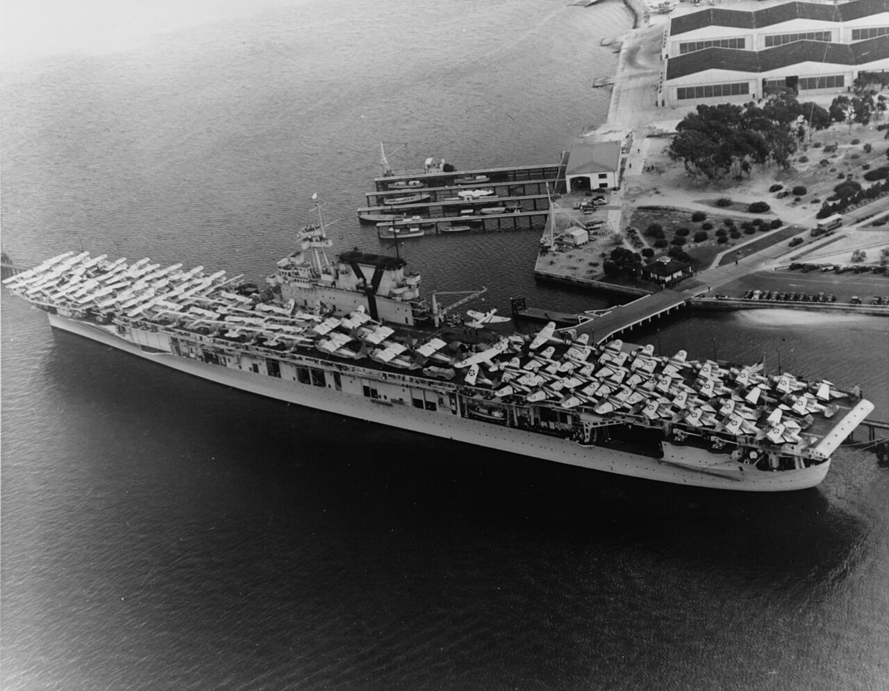
(1940년 샌디애고에서 하와이로 출발하기 위해 항공기를 잔뜩 적재한 USS Yorktown (2만6천톤, 32.5노트). 갑판 위의 항공기 중 일부는 육상 기지에 배달용으로 실은 것. 최대 90대의 함재기를 실을 수 있다고 되어 있지만 그건 매달아놓은 예비용 함재기까지 그렇다는 것이고, 미드웨이 당시에는 대충 70여 대가 한계였다고.)
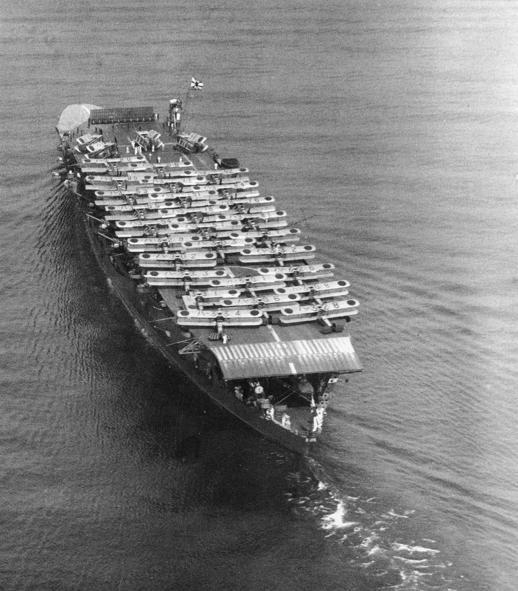
(1934년 오사카 항에서의 아카기. 만재 배수량 4만2천톤으로 요크타운보다 더 큼. 그런데도 함재기 대수는 더 적어서 보통 66대. 이유는 함재기의 설계 사상도 한몫. 아래 사진에서 더 설명.)
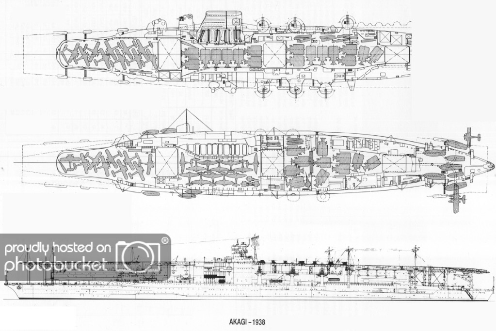
(일본해군 항모 아까기의 격납갑판의 계획도. 저렇게 일본 항모는 격납갑판을 2층으로 구성했는데도 수용 가능한 항공기 대수가 제한적. 일단 함체 설계가 효율적이지 못한 이유도 있으나, 날개를 접지 못하거나 접어도 찔끔 접는 것도 큰 이유.)
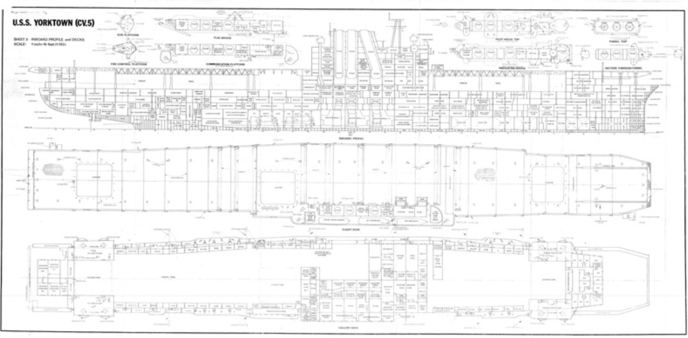
(미해군 항모 USS Yorktown (CV-5)의 격납갑판. 일본 항모와는 달리 격납갑판이 단층이지만 멋대가리 없게 사각형인 격납갑판이 넓직하고 실용적임.)
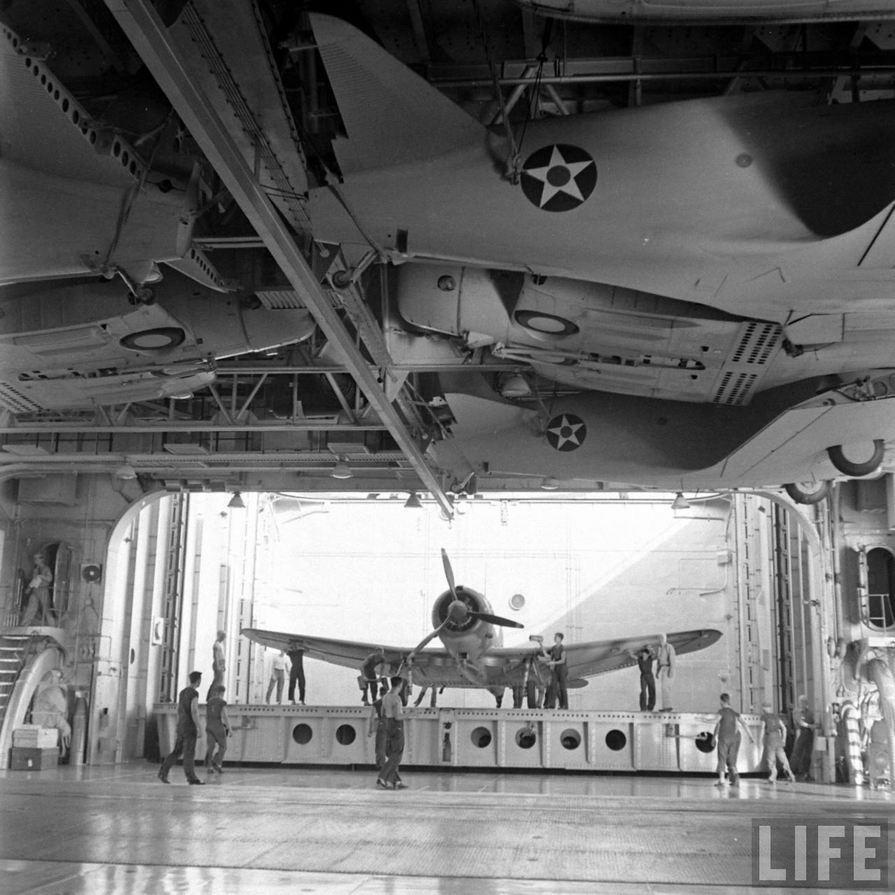 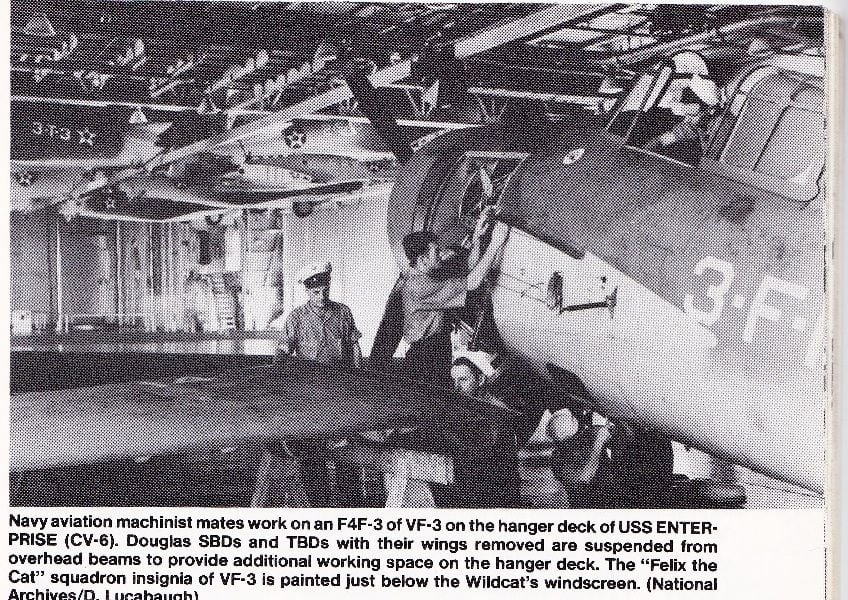
(그리고 추가적으로, 미해군 항모들은 단층인 대신 작업 효율을 높이기 위해 격납고의 층고를 여유있게 설계했고, 덕분에 예비용 함재기의 날개를 떼어낸 뒤 저렇게 격납고 천정에 붙여놓을 수 있었음. 두 사진 모두 USS Enterprise (CV-6)의 것.)
그런데 구슬도 꿰어야 보배라고, 아무리 전력이 뛰어나도 지휘 체계가 제대로 확립되어있지 않으면 말짱 도루묵. 당시 엔터프라이즈와 호넷은 Task Force 16이라는 하나의 부대로 묶여 있었지만 요크타운은 별도의 TF 17이라는 부대로 편성되어 있었음. TF 16의 짱은 피부병으로 입원한 할시를 대신한 Raymond A. Spruance였고 TF 17의 짱은 Frank J. Fletcher. 항모가 2대인 쪽이 더 높을 것 같지만 항모전 경험이 많은 플렛처가 두 항모전단의 통합 사령관으로 임명됨. 미해군 조직의 수평적 특성이 여기서 드러나는 것이, TF 17의 짱이 통합짱이니 TF 16이 무조건 TF 17에 따르라고 하지 않음. 6월 3일, 두 항모전단의 참모들은 모여서 함재전투기 통제 지휘를 어떻게 할 것인지에 대해 협의. 작전 계획에 따르면 이 두 항모전단은 유사시 서로 돕기엔 가깝고 일본 정찰기에게 한꺼번에 발각되기엔 먼 거리, 즉 40km 정도 거리를 유지하게 되어 있음. 이 정도 거리면 두 항모 전단의 CAP 전투기들이 각각 따로 활동하는 것이 유리할까 모두 하나의 지휘통제에 따르는 것이 유리할까? 40km면 F4F Wildcat 전투기들이 약 5분이면 주파할 수 있는 거리라서 하나의 지휘통제를 받는 것이 유리. 두 항모전단의 참모들은 자기들끼리의 서열이 아니라, 함대방공 CAP 지휘 경험이 많은 TF 16 소속 엔터프라이즈의 관제사인 Leonard Dow 소령이 통합 지휘를 맡는 것으로 합의. 전투 상황에서는 뭔 일이 벌어질지 모르므로 혹시나 두 항모전단이 각각 따로 움직일 경우엔 TF 17의 전투기들은 요크타운의 관제사 Oscar Pederson 소령이 맡기로 결정.
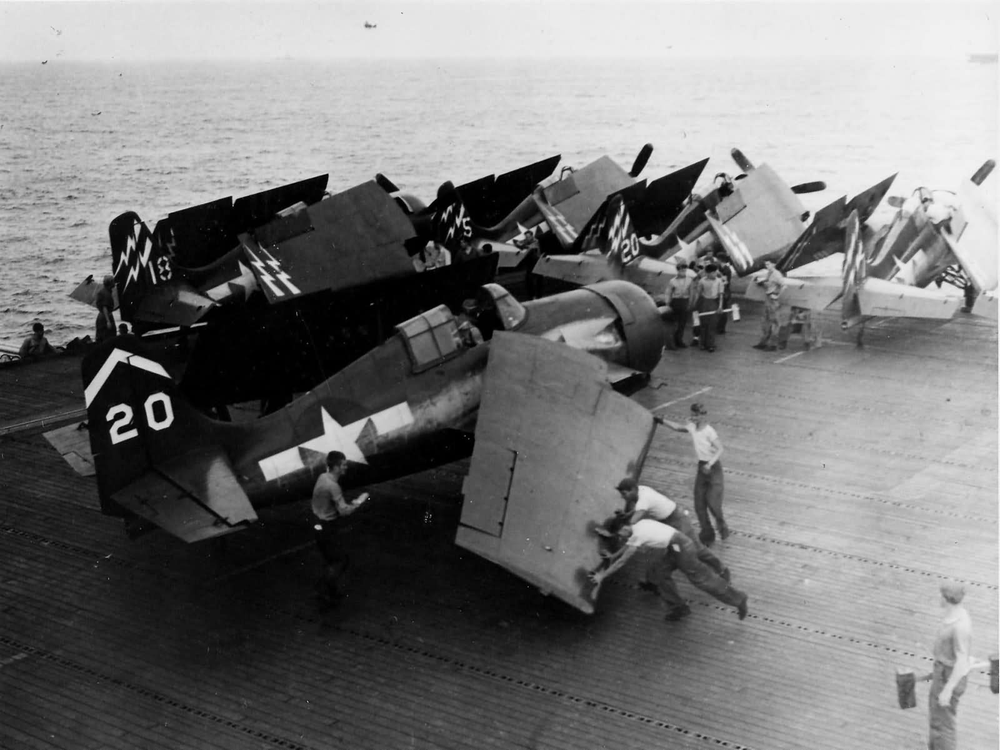
(작은 호위 항모인 USS Hoggatt Bay (CVE-75) 비행갑판 위의 F4F Wildcat 전투기. 비교적 작은 사이즈에 짧은 거리로도 이착함이 가능하여 나중에 더 우수한 헬캣 전투기가 나온 뒤에도 호위 항모에서는 와일드캣을 선호했다고.)
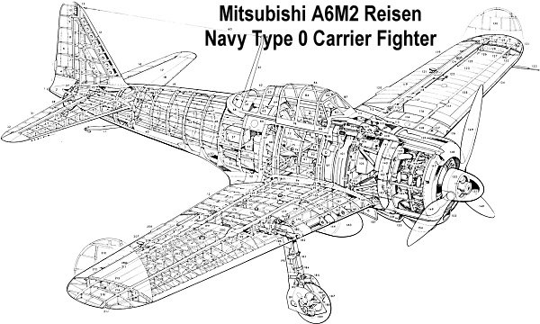
(원래 와일드캣이 제로센 전투기에 비해 길이와 날개폭이 약간 더 작은데, 정작 기체의 무게는 와일드캣이 2.2톤, 제로센이 1.7톤으로 더 가벼움. 널리 알려진 바와 같이 항속거리와 속도 등을 늘리기 위해 장갑을 가볍게 했기 때문. 또한 날개를 접는 것도 항모의 엘리베이터에 간신히 오를 수 있을 정도로 날개 끝 부분만 접도록 하여 보강재도 안 쓰고 기계 장치도 줄여서 무게를 최소화. 윗 사진에서 보듯이 와일드캣은 더 무거워지는 것을 감수하고 날개를 크게 접어 더 많은 대수를 좁은 격납고에 수용할 수 있도록 함. 덕분에 일본 항모들이 배수량이 약간 더 컸음에도 오히려 더 적은 수의 함재기를 탑재.)
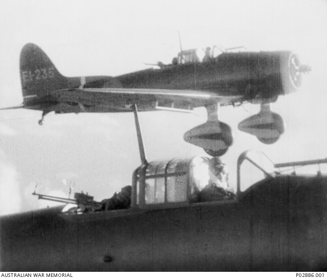 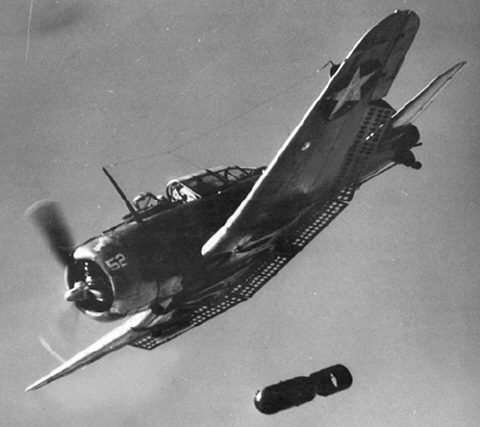
(위는 일본의 급강하 폭격기 Aichi D3A1 "Val", 아래는 미국의 급강하 폭격기 Douglas SBD Dauntless. '발'의 기체 중량은 2.4톤, 돈틀리스는 2.9톤이고, '발'은 보통 250kg 폭탄을 장착하는데 비해 돈틀리스는 대개 1천 파운드(500kg) 폭탄을 장착. 그런데도 '발'의 날개폭은 14.4m, 돈틀리스는 12.7m. 이런 것이 결국 기술의 차이이자 전술적 우선순위를 택하는 가치관의 차이. 두 기체 모두 날개는 접을 수 없는 고정식. 급강하 폭격기는 특성상 날개의 강도가 높아야 했으므로 둘 다 접는 날개는 포기.)
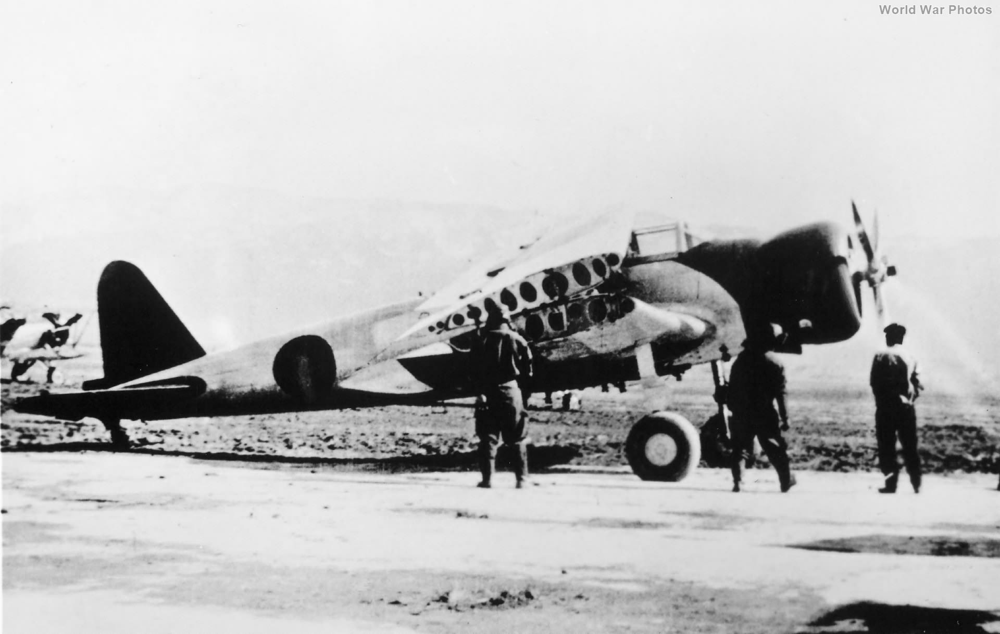 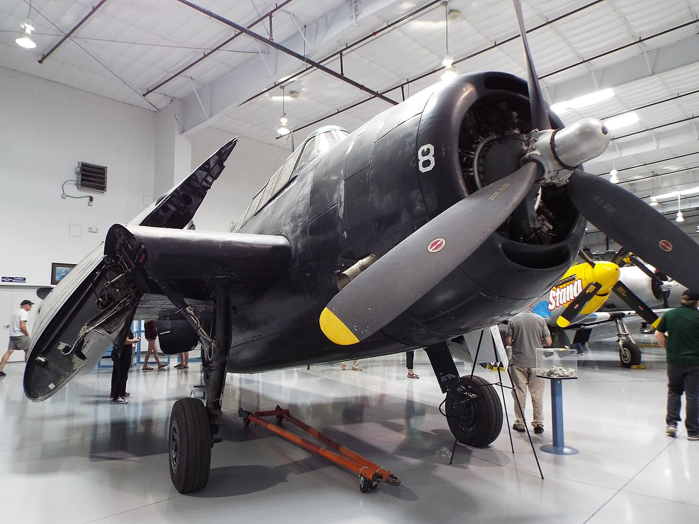
(위는 일본해군의 뇌격기인 Nakajima B5N 'Kate'. 아래는 미해군의 뇌격기 Grumman TBF Avenger. 단, 미드웨이에서는 어벤저가 항모에서는 아직 안 쓰였고, 저성능으로 악명 높던 Devastator가 쓰였음. 아무튼 펼쳤을 때 케이트의 날개폭은 15.5m, 어벤저는 펼쳤을 때 16.5m, 그에 비해 접었을 때는 케이트가 7.5m, 어벤저는 5.8m. 저러니 미해군은 더 작은 항모에도 더 많은 함재기를 실을 수 있는 것. 어벤저의 저 날개 접는 기술은 그러만사의 특허인 Sto-Wing 기술로서, 현대적인 Grumman E-2 Hawkeye 조기경보기에도 사용됨.)
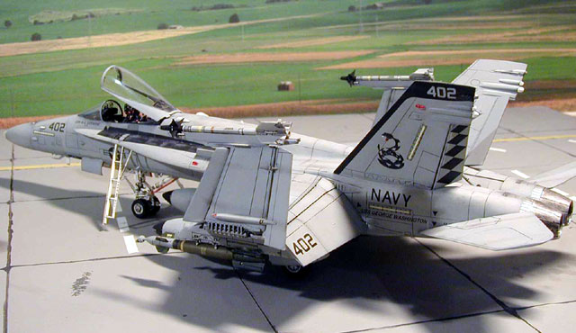
(이야기 나온 김에, 왜 F/A-18의 날개는 저렇게 조금만 접을까? 무장용 파일런 등이 즐비하게 달린 현대적 전투기의 날개를 많이 접는 것은 쉬운 일이 아님. 그리고 접은 날개 끝이 꼬리 날개보다 더 높으면 안 된다고. 정확하게는, 미해군에서 제안요청서를 낼 때, 직육면체의 사각형을 제시하며 그 안에 들어가는 크기의 함재기를 요구한다고 함.)
<옳고 그른 것은 없다, 그저 우선순위의 선택이 있을 뿐> 이렇게 되면 두 항모전단의 조종사들이 동일한 무선 주파수와 동일한 용어를 써야 함. 관제사들은 공통 주파수를 정하고 서로의 용어집을 교환하여 점검. 원래 항공 관제 용어는 미해군 내에서는 물론 영국해군과도 다 통일했었지만 실제 점검해보니 각 부대별로 사용하는 용어와 그 뜻이 약간씩 다른 것이 발견됨. 서로 협의하여 이를 통일하고 조종사들에게 교육. 뿐만 아니라 두 항모전단은 동일한 콜사인(call sign, 톰 크루즈를 매버릭이라고 부르는 것)을 써야 함. 우리쪽에도 매버릭이 있고 저쪽에도 매버릭이 있을 수 있기 때문. 이것도 편대별 콜사인 목록을 교환하여 겹치는 것이 있으면 통일하고 서로의 콜사인을 숙지. 편대에만 콜사인이 있는 것이 아님. 관제사는 물론이고 항모 자체에도 콜사인이 있음. 일본군이 감청하고 있을 수도 있는 무선통신에 대고 요크타운이니 엔터프라이즈니 하는 실제 함명을 부르는 것은 적군에게 정보를 갖다바치는 일이기 때문. 가령 미해군 함정들의 고물에는 원래 함명이 페인트칠로 적혀 있으나, 실전에 들어갈 때는 다 지우고 나감. 그래서 엔터프라이즈는 Red Base, 호넷은 Blue Base, 요크타운은 Scarlet Base로 결정.
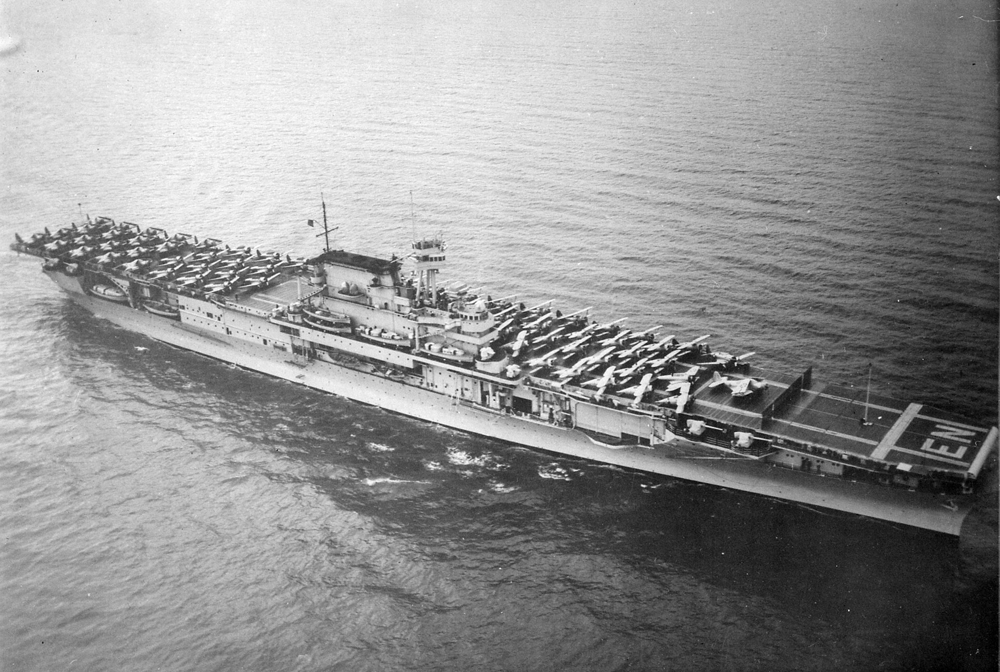
(1939년의 엔터프라이즈의 모습. 만재 배수량 3만2천톤으로서 요크타운보다는 크지만 거의 4만3천톤의 카가보다는 훨씬 작음. 그런데도 엔터프라이즈의 함재기 대수는 80여 대, 카가는 70여 대.)
다만 문제는 전투기에 피아식별장치(IFF)이 장착률이 아직 높지 않았다는 점. 엔터프라이즈의 전투기들은 모두 IFF를 갖추었으나 호넷의 전투기들은 60% 정도, 요크타운은 고작 40% 정도만 갖춤. 각 편대별로 1대만이라도 IFF를 갖추면 되므로 요크타운 내에서 편대 배속을 새로 하여 편대당 최소 1대는 IFF를 갖추도록 조치. 그리고 가장 중요한 것은 작전 전체를 끌고 나갈 독트린. 적기 격추에 방점을 두느냐, 뇌격기와 폭격기로 구성된 공격 편대의 보호에 방점을 두느냐, 또는 항모 보호에 방점을 두느냐는 매우 중요한 문제. 두 제독은 항모 보호가 가장 중요하다고 합의. 이로 인해 일본함대를 공격하러 출격하는 뇌격기들과 폭격기들에게는 충분한 수의 호위 전투기가 따라 붙지 못함. 그에 비해 일본해군 공격편대에는 언제나 충분한 제로센 전투기들이 호위로 딸려 있었음. 이 결정이 승패를 결정지은 가장 중요한 차이 중 하나. <레이더를 무력화 시키는 제로센> 6월 4일 새벽 4시30분, 일본해군 기동부대에서는 72대의 폭격기들이 36대의 제로센 전투기들의 호위를 받으며 출격. 미해군은 일본군 암호 해독을 통해 일본 기동부대의 습격을 예상하고 PBY Catalina 수상정을 여러 대 띄워 그 일대를 샅샅이 뒤지고 있었는데, 약 5시 40분경 그 중 일부가 일본 항모들을 발견하고 무전으로 알려옴. 거의 동시에, 미드웨이에 설치된 SCR-270 레이더가 일본기들을 포착. 그러나 레이더로 일찍 포착해봐야 무쓸모. 미드웨이에서 출격한 F2A Brewster Buffalo 전투기들은 느려서 제로센의 상대가 되지 못했고, F4F Wildcat 전투기들은 숫자가 부족. 출격한 28대의 미군 전투기 중 17대가 격추되고 4대를 제외한 나머지도 상당한 손상을 입음. 그럼에도 격추시킨 일본기는 4대의 B5N 폭격기와 제로센 1대뿐. 일본 항모들을 떄려부수겠다고 출격한 (당시로서는 최신예였던) Avenger 뇌격기와 B-26 폭격기들도 대부분 제로센에 의해 격추됨.
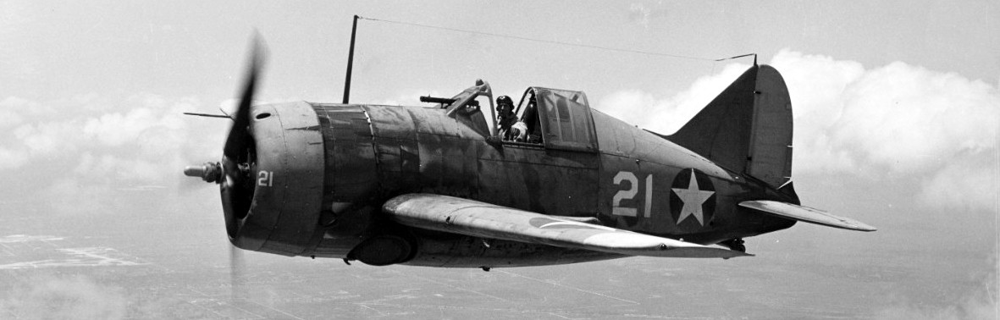
(와일드캣도 제로센을 상대로 버티기가 쉽지 않았는데 이 못 생긴 브루스터 버팔로는 정말 그냥 날아다니는 관짝. 1941년 이 전투기를 받아서 사용하던 영국군은 성능이 너무 좋지 않아 일본기를 상대로 승산이 없자, 기관총을 더 가벼운 것으로 바꿔달고 탄약도 더 적게 넣는 등 무게를 줄이려고 해보았으나 아무 쓸모가 없었다고. 그런데 놀랍게도 이 버팔로도 와일드캣과 같은 해인 1937년 첫 비행을 한 나름 최신예기.)
한편, 폭격기들이 30분 정도 신나게 폭격을 했지만 일본 편대장이 보기에 미드웨이의 활주로 및 방어시설을 완전히 때려부수진 못함. 일본 편대장은 무전으로 재공습을 건의. 그런데 원래 주어진 야마구치 제독의 지침에 따라, 나구모의 항모들에는 유사시 미해군 함대가 나타날 때에 대비하여 전체 공격 전력의 절반 정도가 예비대로 남겨져 있었음. 절반은 급강하 폭격기, 나머지 절반은 뇌격기였고, 뇌격기에는 어뢰가 장착된 상태로 대기 중이었음. 급강하 폭격기에는 폭탄이 달려 있지 않았는데, 이는 어뢰에 비해 폭탄은 더 신속하게 장착이 가능했으므로 원래 비행갑판 위에서 장착하는 것이 표준 절차였기 때문. 아마도 격납고에서 폭탄까지 장착하기에는 격납고가 너무 좁아 비효율적이라서 그랬던 모양. 아무튼 기동부대 사령관 나구모 제독은 편대장의 건의에 따라 재공습을 준비. 따라서 격납고의 뇌격기들에게서 어뢰를 떼어내고 접촉신관을 장착한 지상 공격용 일반 폭탄으로 바꿔다는 작업을 진행. 그런데 7시 40분 경, 주변을 정찰 중이던 일본 수상 정찰기 Aichi E13A1가 미드웨이 북쪽에서 미해군 함정 10척을 발견했다는 무전을 보내옴. 항모에 대한 이야기는 없었으나 나구모는 이 함대의 격파가 더 중요하다고 판단. 그래서 한참 바꿔달던 일반 폭탄을 다시 떼어내고 파갑탄(armor piercing bomb)과 어뢰를 장착하도록 지시. 이렇게 무장 교체로 난리가 난 격납고 상황도 문제였지만, 진짜 문제는 미드웨이를 때리고 돌아오는 1차 공격편대의 수용. 이들에겐 연료가 얼마 남아 있지 않았으므로 당장 착함을 해야 하는데, 일자형 비행갑판을 가진 당시 항모들은 한번에 착함이나 이함이나 둘 중 하나만 할 수 있었음. 즉 발견된 그 미국함대를 노리고 예비 공격대를 날리려면 돌아오는 1차 공격대 중 대부분은 연료 부족으로 바닷물 위에 불시착해야 하는 상황. 고민하던 나구모는 일단 1차 공격대의 착함부터 받기로 결정.
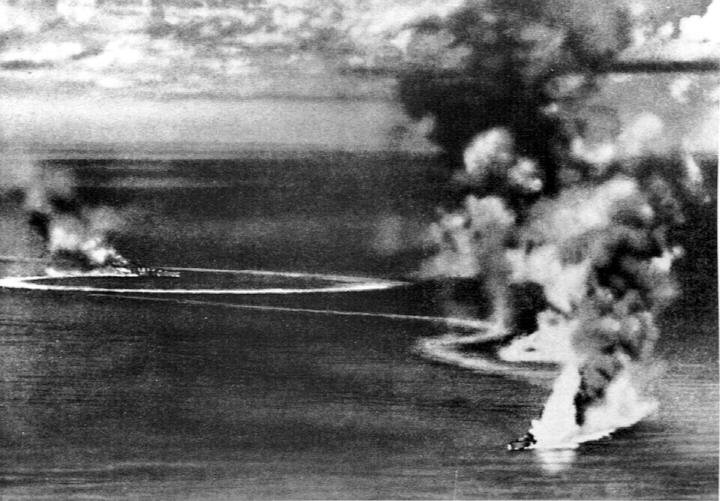
(그런데 이렇게 적함 공격용으로 예비로 남겨둔 폭격기들에게 지상 공격용 폭탄으로 바꿔달다가 뒤늦게 적함 발견 보고가 날아들어 다시 적함 공격용 파갑탄으로 바꿔다는 일은 바로 두어 달 전인 1942년 4월 5일 실론섬 공격 작전에서도 벌어진 일. 이렇게 우왕좌왕하다가 결국 급한 김에 일부 'Val' 급강하 폭격기들은 지상 공격용 일반 폭탄을 달고 영국 군함들을 공격하러 나섰는데, 결과적으로는 그렇게 부딪히자마자 많은 파편과 함께 폭발하는 일반 폭탄을 투하했더니 군함들의 대공포들을 제압하는데 큰 도움이 되었음. 그래서 이후로는 일부러 일부 폭격기에는 파갑탄이 아닌 일반 폭탄을 달고 출격하기도. 사진은 당시 일본 함재기들의 맹폭을 받고 큰 손실을 입는 영국 중순양함 HMS Dorsetshire와 HMS Cornwall.)